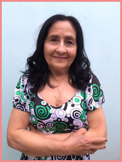

Aprenda a Costurar suas próprias Roupas do Zero em poucos meses, seja para você e sua família, por Renda Extra ou para Viver de Costuras.
Conheça a professora
Dona Neci
Maria Neci, mais conhecida por Dona Neci, é uma cearence, mulher de fibra, casada a mais de 60 anos, mãe de 11 filhos , e avó de netos a perder de conta.
Costureira profissional a mais de 50 anos, e experiência com os mais diferentes estilos de costura.
Hoje se dedica a ensinar, de um jeito simples e atencioso, pessoas comuns que nunca tiveram contato com a costura.
O que você vai aprender?
- Introdução a costura
- Modelagem básica
- Costura reta e overlock
- Caseamento e botões
- Colocação de ziper
- Cortar, costurar e montar
- Cofecção em malha
- E muito mais
Horários das aulas
Segunda: 8h às 10h - 14h às 16h
Terça: 8h às 10h - 14h às 16h
Quarta: 8h às 10h - 14h às 16h
Quinta: 8h às 10h - 14h às 16h
Sexta: 8h às 10h - 14h às 16h